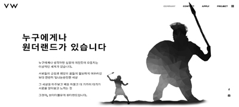

V-W
프로젝트 이름V-W - clone project
프로젝트 개요현재 운영되고 있는 사이트 중에 마음에 들고, 기능이나 페이지를 구현해보고 싶은 사이트로 선정하였다.
참 여 도Design:100% Coding:100%
제 작 기 간2021.01~2021.03
목표똑같진 않더라도 어느정도 비슷하게는 구현해 보자.
문제발생스크립트 쪽 코딩을 하다 보니 한 개를 처리하면 다른 부분에서 오류가 생겼다.
해결방안일단 구글 검색을 엄청 많이 한 것 같다. 그래도 원하는 답을 찾지 못한게 많지만 최대한 스스로 해결해 보려고 노력했다.
해결한 문제가 70%정도도 되지 않지만 그 이상의 경험이였다.
사용언어HTML5/CSS3 JavaScript/jQuery
중점 구현 기능
메인 페이지 슬라이드 구현
slick slide 라이브러리 이용하여 슬라이드 구현 일정 시간마다 사진 전환, dot버튼 누르면 이미지가 바뀝니다.

스크롤 위치마다 이미지 전환
company 페이지에서 소개글 오른쪽에 총 3개의 이미지가 스크롤 일정 간격마다 이미지가 fade in, fade out 됩니다. 검은 배경에선 헤더색상과 sns icon색이 반전됩니다.
스크롤 위치마다 컨텐츠 보임
animate.css 라이브러리 활용하였고, 일정 지점으로 스크롤 다운 시, 컨텐츠가 없었다가 효과와 함께 나옴
모바일 480px
메인 및 서브페이지 반응형 모바일 480px로 구현했습니다.